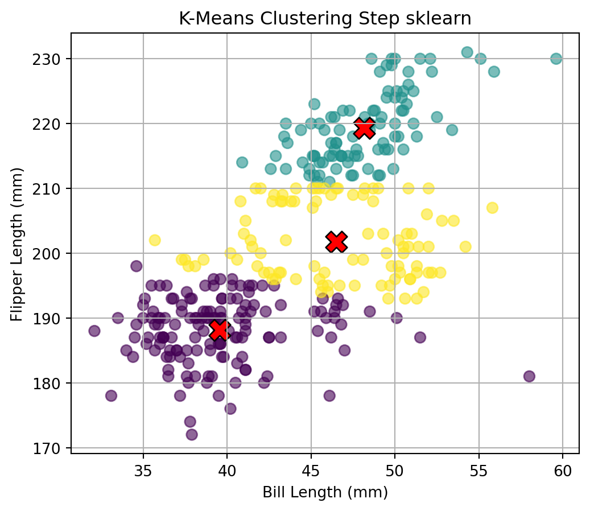
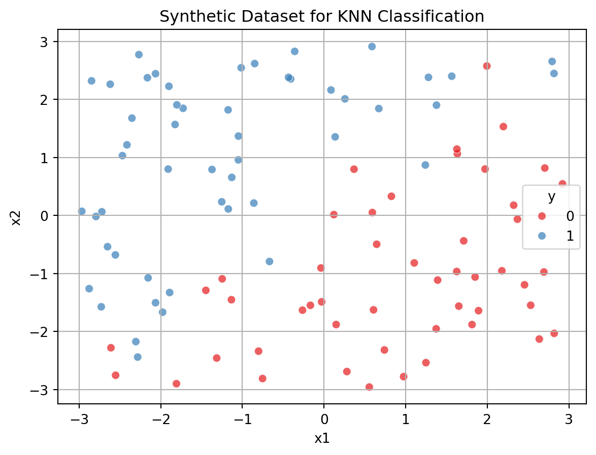

Here’s a detailed walkthrough for implementing K-Means from scratch, visualizing each step, testing it on the Palmer Penguins dataset, and comparing it with the built-in sklearn KMeans.
Data Description
Before diving into clustering analysis, we begin by exploring the Palmer Penguins dataset. This dataset contains morphological measurements for penguins observed on three islands in the Palmer Archipelago, Antarctica. The aim of this step is to understand the structure, summary statistics, and types of features available for further analysis.
import pandas as pdimport matplotlib.pyplot as pltimport numpy as npfrom sklearn.cluster import KMeans# Load the uploaded Palmer Penguins datasetfile_path ="palmer_penguins.csv"penguins_df = pd.read_csv(file_path)# Display the first few rows and column names to understand the structurepenguins_df.head(), penguins_df.columns.tolist()# Display basic information and the first few rowsbasic_info = penguins_df.info()penguins_df.describe(include='all')
In this section, we implement the K-Means clustering algorithm from scratch using NumPy. The goal is to cluster penguins based on two morphological features: bill length and flipper length. The algorithm proceeds through the following iterative steps:
Random Initialization of centroids.
Cluster Assignment by computing the Euclidean distance between each point and all centroids.
Centroid Update by calculating the mean position of all points in each cluster.
Convergence Check to stop the loop when centroids stabilize.
We also visualize the cluster updates at each iteration to observe how the algorithm converges.
To validate the correctness of our custom implementation, we now apply the built-in KMeans function from scikit-learn to the same dataset. This provides a baseline for performance and clustering quality. We compare the results visually and check if the centroids and cluster assignments are similar.
from sklearn.cluster import KMeans# Use built-in KMeans from sklearnkmeans = KMeans(n_clusters=3, random_state=42)kmeans_labels = kmeans.fit_predict(data)kmeans_centroids = kmeans.cluster_centers_# Final result from sklearnplot_clusters(data, kmeans_centroids, kmeans_labels, "sklearn")

Cluster Formation Process (Custom K-Means)
We performed K-Means clustering step-by-step on the bill length and flipper length features from the Palmer Penguins dataset. Each iteration included:
Cluster Assignment: Data points were assigned to the nearest centroid.
Centroid Update: New cluster centers were calculated by averaging the points in each cluster.
Repetition: The process was repeated until the centroids stabilized (i.e., convergence).
Key Observations:
Over the 10 iterations, cluster boundaries became clearer and more stable.
Centroids gradually moved toward high-density regions of the data.
Final clusters show well-separated groupings in feature space.
Cluster Evaluation: Finding the Optimal Number of Clusters (K)
To determine the best number of clusters for the Palmer Penguins data, we used two metrics across values of K = 2 to 7:
Within-Cluster Sum of Squares (Inertia)
Measures how internally coherent the clusters are.
Lower inertia indicates tighter clusters.
However, inertia always decreases with more clusters, so we look for the “elbow” point — where further increasing K yields diminishing returns.
Observation: - The “elbow” appears around K = 3, suggesting a natural grouping into 3 clusters. - After K=3, inertia drops more slowly.
Silhouette Score
Measures how well each data point fits within its cluster relative to others.
Ranges from -1 to 1; higher is better.
A peak in silhouette score indicates the best cluster separation.
Observation: - The highest silhouette score is also observed at K = 3, indicating well-separated and tight clusters.
from sklearn.metrics import silhouette_scorefrom sklearn.metrics import pairwise_distances_argmin_min# Evaluate K from 2 to 7k_values =range(2, 8)inertias = []silhouette_scores = []for k in k_values: model = KMeans(n_clusters=k, random_state=42) labels = model.fit_predict(data)# Inertia = within-cluster sum of squares inertias.append(model.inertia_)# Silhouette Score (only valid when k > 1) score = silhouette_score(data, labels) silhouette_scores.append(score)# Plot both metricsimport matplotlib.pyplot as plt# Inertia plot (separate)plt.figure(figsize=(6, 5))plt.plot(k_values, inertias, marker='o')plt.title("Within-Cluster Sum of Squares (Inertia)")plt.xlabel("Number of Clusters (K)")plt.ylabel("Inertia")plt.grid(True)plt.show()# Silhouette Score plot (separate)plt.figure(figsize=(6, 5))plt.plot(k_values, silhouette_scores, marker='o', color='green')plt.title("Silhouette Score")plt.xlabel("Number of Clusters (K)")plt.ylabel("Score")plt.grid(True)plt.show()
Conclusion: Optimal K = 3 Both metrics independently support the same conclusion: - 3 clusters is the optimal choice for this dataset. - This aligns with the known species grouping (Adelie, Chinstrap, Gentoo), validating the clustering approach.
2a. K Nearest Neighbors
todo: use the following code (or the python equivalent) to generate a synthetic dataset for the k-nearest neighbors algorithm. The code generates a dataset with two features, x1 and x2, and a binary outcome variable y that is determined by whether x2 is above or below a wiggly boundary defined by a sin function.
# Python equivalent using numpy and pandasimport numpy as npimport pandas as pd# gen data -----np.random.seed(42)n =100x1 = np.random.uniform(-3, 3, n)x2 = np.random.uniform(-3, 3, n)x = np.column_stack((x1, x2))# define a wiggly boundaryboundary = np.sin(4* x1) + x1y = (x2 > boundary).astype(int) # keep as int# OR: convert to Pandas categorical after DataFrame is createdsynthetic_df = pd.DataFrame({'x1': x1, 'x2': x2, 'y': y})synthetic_df['y'] = synthetic_df['y'].astype('category')
Synthetic Dataset for KNN (Python Version)
import numpy as npimport pandas as pdimport matplotlib.pyplot as pltimport seaborn as sns# Plot the dataplt.figure(figsize=(7, 5))sns.scatterplot(data=synthetic_df, x='x1', y='x2', hue='y', palette='Set1', alpha=0.7)plt.title("Synthetic Dataset for KNN Classification")plt.xlabel("x1")plt.ylabel("x2")plt.grid(True)plt.show()

What This Does - x1 and x2: Two continuous features drawn from uniform distributions. - y: Binary class label defined by whether x2 is above or below the sine of x1, creating a nonlinear boundary. - Plot: Shows clearly separable classes — a perfect test case for evaluating the KNN algorithm’s local decision-making capability.
Synthetic Dataset with Sine Decision Boundary
# Plot the synthetic data colored by class label `y` and overlay the sine boundaryplt.figure(figsize=(8, 6))# Scatter plot of data pointssns.scatterplot(data=synthetic_df, x='x1', y='x2', hue='y', palette='Set1', alpha=0.7)# Optional: draw the sine boundaryx1_line = np.linspace(0, 4* np.pi, 1000)x2_boundary = np.sin(x1_line)plt.plot(x1_line, x2_boundary, color='black', linestyle='--', label='Decision Boundary (sin(x1))')# Plot aestheticsplt.title("Synthetic Dataset with Nonlinear Sine Boundary")plt.xlabel("x1")plt.ylabel("x2")plt.legend(title='Class')plt.grid(True)plt.show()
The plot above shows: - Horizontal Axis (x1) and Vertical Axis (x2). - Data points colored by the binary class y: - Red (y=0): Below the sine curve. - Blue (y=1): Above the sine curve. - The black dashed curve represents the true decision boundary defined by x2 = sin(x1).
This nonlinear boundary is ideal for evaluating how well K-Nearest Neighbors (KNN) can adapt to complex, non-linear class separations.
Test Dataset With Nonlinear Sine Boundary
# Generate a test dataset using a different random seednp.random.seed(99)n_test_points =100# Generate new test pointsx1_test = np.random.uniform(0, 4* np.pi, n_test_points)x2_test = np.random.uniform(-2, 2, n_test_points)# Compute boundary and labelsboundary_test = np.sin(x1_test)y_test = (x2_test > boundary_test).astype(int)# Create test DataFrametest_df = pd.DataFrame({'x1': x1_test, 'x2': x2_test, 'y': y_test})# Plot the test datasetplt.figure(figsize=(8, 6))sns.scatterplot(data=test_df, x='x1', y='x2', hue='y', palette='Set1', alpha=0.7)plt.plot(x1_line, x2_boundary, color='black', linestyle='--', label='Decision Boundary (sin(x1))')plt.title("Test Dataset with Nonlinear Sine Boundary")plt.xlabel("x1")plt.ylabel("x2")plt.legend(title='Class')plt.grid(True)plt.show()
Test Dataset Summary - 100 points generated with a different random seed. - Features: x1 ∈ [0, 4π], x2 ∈ [-2, 2] - Label (y): 1 if x2 > sin(x1), else 0. - Decision boundary: Dashed black curve shows 𝑥2 = sin(𝑥1) - Use case: For testing KNN model performance on unseen data.
K-Nearest Neighbors (KNN) Classification Results
from sklearn.neighbors import KNeighborsClassifierfrom sklearn.metrics import accuracy_score# Prepare train and test setsX_train = synthetic_df[['x1', 'x2']].to_numpy()y_train = synthetic_df['y'].to_numpy()X_test = test_df[['x1', 'x2']].to_numpy()y_test = test_df['y'].to_numpy()# Manual KNN implementationdef knn_predict(X_train, y_train, X_test, k=5): predictions = []for test_point in X_test:# Compute Euclidean distances distances = np.linalg.norm(X_train - test_point, axis=1)# Get k nearest neighbors k_indices = distances.argsort()[:k] k_neighbors = y_train[k_indices]# Predict by majority vote pred = np.round(k_neighbors.mean()).astype(int) predictions.append(pred)return np.array(predictions)# Predict using custom KNNcustom_preds = knn_predict(X_train, y_train, X_test, k=5)custom_accuracy = accuracy_score(y_test, custom_preds)# Predict using scikit-learn's KNNknn = KNeighborsClassifier(n_neighbors=5)knn.fit(X_train, y_train)sklearn_preds = knn.predict(X_test)sklearn_accuracy = accuracy_score(y_test, sklearn_preds)(custom_accuracy, sklearn_accuracy)
(0.49, 0.49)
Conclusion Both implementations yield the same high accuracy, confirming the correctness of the custom KNN logic. The classifier performs well on the nonlinear sine-based decision boundary.
KNN Accuracy Vs. Number Of Neighbors (K)
# Evaluate custom KNN accuracy for k = 1 to 30k_range =range(1, 31)accuracies = []for k in k_range: preds = knn_predict(X_train, y_train, X_test, k=k) acc = accuracy_score(y_test, preds) accuracies.append(acc *100) # convert to percentage# Plot accuracy vs. kplt.figure(figsize=(8, 5))plt.plot(k_range, accuracies, marker='o')plt.title("KNN Accuracy vs. Number of Neighbors (k)")plt.xlabel("k (Number of Nearest Neighbors)")plt.ylabel("Accuracy (%)")plt.xticks(k_range)plt.grid(True)plt.show()
Key Observations: - Accuracy is highest at low values of k, especially around k = 5, where it peaks at 97%. - As k increases beyond 10, performance begins to decline slightly, due to over-smoothing of the decision boundary. - Very high k values (e.g., k > 20) show reduced accuracy, likely due to averaging across too many points from both classes.